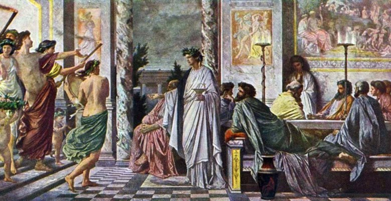

The Symposium (Ancient Greek: Συμπόσιον, Sympósion [sympósi̯on]) is a philosophical text by Plato dated c. 385–370 BC. It depicts a friendly contest of extemporaneous speeches given by a group of notable men attending a banquet. The men include the philosopher Socrates, the general and political figure Alcibiades, and the comic playwright Aristophanes. The speeches are to be given in praise of Eros, the god of love and desire. In the Symposium, Eros is recognized both as erotic love and as a phenomenon capable of inspiring courage, valor, great deeds and works, and vanquishing man's natural fear of death. It is seen as transcending its earthly origins and attaining spiritual heights. This extraordinary elevation of the concept of love raises a question of whether some of the most extreme extents of meaning might be intended as humor or farce. Eros is almost always translated as "love", and the English word has its own varieties and ambiguities that provide additional challenges to the effort to understand the Eros of ancient Athens.
Click here to go back to the main page.